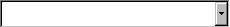

This tutorial will walk you through building the simplest of all
possible missions: a one-on-one fighter duel. This will be a
bare-bones mission (for example, it will have no briefing), but you'll
be playing it in less than two minutes.
First, launch Fred2.exe. It's in the same directory
as the main freespace program. The screen should look something
like the picture at right.
The green ship you see is the player. The player has to be
called Alpha 1, so you have to put that ship into Alpha wing.
To do that, first click on the ship or drag a rectangle around it
with the mouse. The ship should
turn from green to white.
|
Now, find the button that looks like this, near the top center of the screen.
Click it once. |
A dialog box pops up. Type Alpha and click
OK.
|
Now we need an opponent. Find this selection box, a little bit to
the right of that button. Click on the little triangle on the
right side and a menu will pop up. Scroll down and pick SF
Mara. (It will be in red.)
|
 |
Holding down the Ctrl key, left click on the grid about 300 meters in
front of Alpha 1. This will create an SF Mara, which is hostile
by default. The main part of the FRED2 window should look like
the picture at right. (The grey information rectangle will
disappear if you move the mouse.)
Okay, that's it! Time to save the mission and give it a try.
Pick Save As... from the File Menu. Call the mission
duel.fs2. Do not change directories; all missions
have to go in a certain directory, and FRED2 puts them there by
default.
Finally, pick Run FreeSpace from the File Menu. Go to the
Tech Room, choose the Mission Simulator, and check Single
Missions.
Your mission should appear as untitled. Jump in your
ship and blast that Shivan fighter!